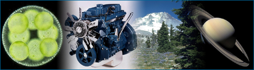
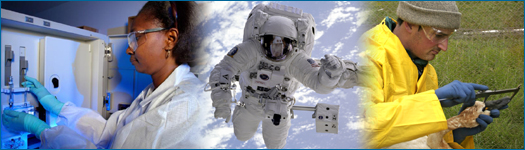

To understand what science is, just look around you. What do you see? Perhaps, your hand on the mouse, a computer screen, papers, ballpoint pens, the family cat, the sun shining through the window …. Science is, in one sense, our knowledge of all that — all the stuff that is in the universe: from the tiniest subatomic particles in a single atom of the metal in your computer's circuits, to the nuclear reactions that formed the immense ball of gas that is our sun, to the complex chemical interactions and electrical fluctuations within your own body that allow you to read and understand these words. But just as importantly, science is also a reliable process by which we learn about all that stuff in the universe. However, science is different from many other ways of learning because of the way it is done. Science relies on testing ideas with evidence gathered from the natural world. This website will help you learn more about science as a process of learning about the natural world and access the parts of science that affect your life.
Science helps satisfy the natural curiosity with which we are all born: why is the sky blue, how did the leopard get its spots, what is a solar eclipse? With science, we can answer such questions without resorting to magical explanations. And science can lead to technological advances, as well as helping us learn about enormously important and useful topics, such as our health, the environment, and natural hazards. Without science, the modern world would not be modern at all, and we still have much to learn. Millions of scientists all over the world are working to solve different parts of the puzzle of how the universe works, peering into its nooks and crannies, deploying their microscopes, telescopes, and other tools to unravel its secrets.
Science is complex and multi-faceted, but the most important characteristics of science are straightforward:
- Science focuses exclusively on the natural world, and does not deal with supernatural explanations.
- Science is a way of learning about what is in the natural world, how the natural world works, and how the natural world got to be the way it is. It is not simply a collection of facts; rather it is a path to understanding.
- Scientists work in many different ways, but all science relies on testing ideas by figuring out what expectations are generated by an idea and making observations to find out whether those expectations hold true.
- Accepted scientific ideas are reliable because they have been subjected to rigorous testing, but as new evidence is acquired and new perspectives emerge these ideas can be revised.
- Science is a community endeavor. It relies on a system of checks and balances, which helps ensure that science moves in the direction of greater accuracy and understanding. This system is facilitated by diversity within the scientific community, which offers a broad range of perspectives on scientific ideas.
- Science affects your life everyday in all sorts of different ways.
- Science can be fun and is accessible to everyone.
- You can apply an understanding of how science works to your everyday life.
- Anyone can become a scientist — of the amateur or professional variety.